Modèle 3D
http://steamreview.org/BlenderSourceTools/
Ce chapitre a pour but de mettre vos modèles 3d crée dans votre mod source, importation se passe en 2 étapes la premier, vous devez export depuis vers un format.smd ou .dmx avant d'exporter vers un fichier .mdl utilisable dans Source.
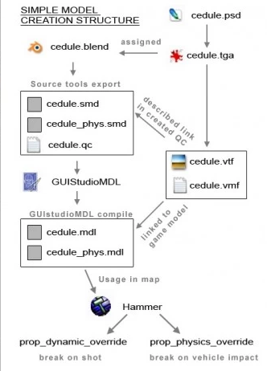
Crée un modèle 3D
Nous allons créer un modèle 3D sur Blender logiciel gratuit et libre, pour télécharger Blender cliquer ici.
Nous allons ajouter un addon pour cela cliquer ici.
Lancez Blender, Allez sur Edit\Preferences.
Sur le préférences allez sur add-ons puis cliquez sur install en haut à droite sélectionner le fichier «blender_source_tools_3.2.5.zip».
Activer «Import-Export: Blender Source Tools» il faut que la case soit coché.
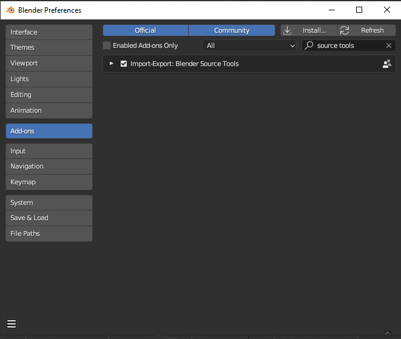
Exporter le modèle 3D sur Source
Aller dans la fenêtre propretie 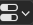 (shift + 7 ou à droite si vous êtes sur le layout par défault)
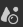 scene -> source engine
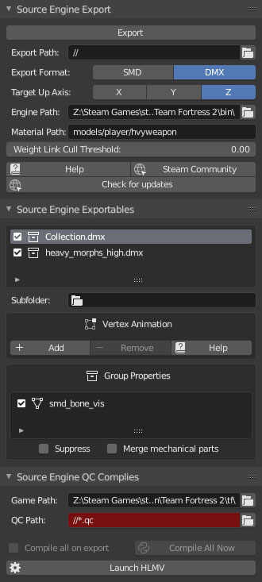
Allez sur Scene dans les Properties puis sur Source Engine Export.
Export Path:
- Indiquer le dossier où sera exporter le modèle 3D en .smd (modelsrc)
Engine Path:
- Dossier Bin du moteur ( exemple: /steam/steamapps/common/Counter-Strike Global Offensive/bin)
Material Path:
- Texture du modèle 3D (exemple: (hl2/materials/)models/prop/computer) (Seulement si vous choisissez .DMX)
Une fois fait cliquer sur «Export»
sur Source Engine QC Complies
Game Path: - Indiquer le dossier de données de votre mod (hl2).
QC Path: - Fichier .qc avec tout les infos de compilation par .qc dans le même dossier que .smd (modelsrc)
(pour plus d'info sur le fichier QC cf. 3.3 faire un fichier QC)
une fois appuyer sur Compile All Now cela va activer la compilation.
La compilation se passe en 2 étape vous aller compiler le modèle 3D en .smd puis en .mdl.
N'oublier pas d'exporter les textures du modèle 3D dans le dossier suivante.
«dossier de données» /materials/models/
Attention! La collection le modèle et le matérials doivent avoir le même nom.
Vérifier dans outliner 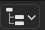 (shift + F9 ou à droite du layout par défault)
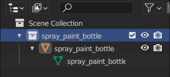
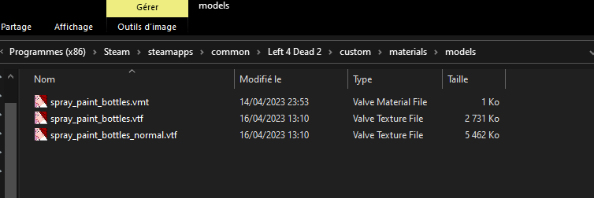
Faire un fichier .QC
https://developer.valvesoftware.com/wiki/QC
Conversion d'un simple model 3D
Fichier .qc est juste un fichier texte, on l'on va mettre dedans les informations lier au type de modèle.
Remplacer «myfirstmodel» par le nom de votre modèle.
$modelname "props_sdk\myfirstmodel.mdl" //le nom du modèle 3D son corps
$body mybody "myfirstmodel-ref.smd" //les vertex fait sous blender
$surfaceprop combine_metal //Le type de surface
$cdmaterials "models\props_sdk" //Repertoire de la texture
$collisionmodel "myfirstmodel-phys.smd" //Les collision
$sequence idle "myfirstmodel-ref.smd" // Séquence sans animation
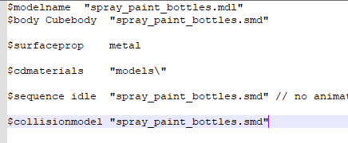
Ajouter des informations pour les props
Exemple pour un prop en verre
$keyvalues
{
prop_data
{
"base" "Glass.Base" // Matériau de base défini comme "Glass.Base"
"dmg.explosive" "1.0" // Remplace le comportement explosif de base du verre
"dmg.bullets" "1.0" // Dommages causés par les balles
"health" "1" // Santé du matériau
"damage_table" "glass" // Tableau de dommages nommé "glass"
}
BreakableModels
{
GlassChunks
{
models\gibs\glass_shard01.mdl // Modèle de fragment de verre 01
models\gibs\glass_shard02.mdl // Modèle de fragment de verre 02
models\gibs\glass_shard03.mdl // Modèle de fragment de verre 03
models\gibs\glass_shard04.mdl // Modèle de fragment de verre 04
models\gibs\glass_shard05.mdl // Modèle de fragment de verre 05
models\gibs\glass_shard06.mdl // Modèle de fragment de verre 06
}
}
}
Vérifier modèle 3D
Aller dans dossier bin et ouvrez le logiciel hlmv ou cliquer sur Launch HLMV sur Ouvrez votre modèle 3D et vérifier bien qui s'affiche comme il faut.
Exporter animation
Dans cette exemple, j'utilise le model trouvable dans
common\sourcesdk_content\hl2\modelsrc\humans_sdk\male_sdk\male_06_reference.smd.
Faite file->import->Source Engine

Donner un nom à votre animation et exporter la en .smd.
 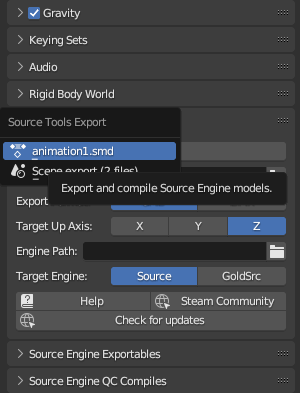
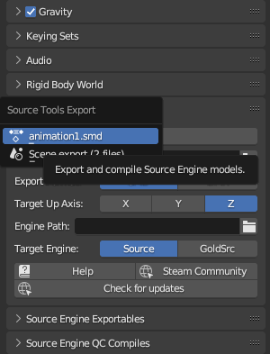
Ajouter l'animation dans la liste des sequences du fichier .qc (voir Faire un fichier QC).
$sequence "idle" "male_06_reference.smd"
$sequence "attack" "animation1.smd" fps 24
Vous pouvez visualiser l'animation dans l'onglet Sequence de hlmv.
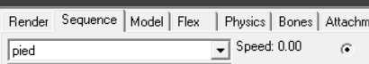